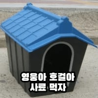

요즘 갈매기 근황
댓글
내놔아아앍
김장훈씨는 저쪽 대기실입니다.
보다에서도 봤는데, 과자 2봉지 (다른종류)까놓고 하나랑 같은 종류의 과자을 사람이먹으면 같은 봉지에들은 과자만 빼먹는다고 함 ㅋㅋ rgb가 인간이랑 똑같아서 색상 식별도 잘한다함
무슨 말인지 모르겠어
와 나만 못알아듣는건가했네. ㅠㅠ
인간이 먹는 과자만 먹는데
사람이 과자 먹는걸 갈매기가 보고 그 과자만 먹는다는데 RGB는 나도 무슨 뜻인지 모르겠음
ㅅㅂ ㅋㅋ 잠을안자서 못알아듣는건가 3번읽었음
그러니까 색상구분이 사람과 같다는거 빼면 나머진 뭔 소리야?
정리해서 다시 말해줘
해석 수정본
보다 라는 유튜브(혹은 티비프로) 에서 본적있는데
다른 종류의 과자 2봉지를 까놓고
하나는 사람이 먹고 하나는 그냥 놔두는 실험을 했어
근데 놀랍게도 사람이 먹은 과자만 빼 먹고
나머지 과자 하나는 그대로 있는거야 ㅋㅋ
아마도 학습된듯? ㅋㅋ
참고로 갈매기랑 인간이랑 구분하는 색감이 같아
아마도 그 영향으로 구분을 잘 하는듯?
혹시 강다니엘 닮은 이모 계심?
안줘



매운새우깡은 안먹는다는 이야기도 있드라 ㅋㅋㅋㅋㅋㅋ
새들은 매운맛을 못느낀대여
새들은 캡사이신 수용체가 없어서 조또 상관 안함
맛이 없어서 안먹을진 몰라도 매워서 안먹는건 아님 ㅋㅋㅋ
어 ... 저기서 신라면에 신라면 스프를 뿌려서 갈매기들 주면 대환장 파티가 열리겠지? ㅋ
마인 마인 마인 마인
월미도가서 새우깡 던지면 떨어지기도전에 비행쇼히면서 채가더라 ㅋㅋㅋ
포장지까지 학습이 되있는건가 ㄷㄷ